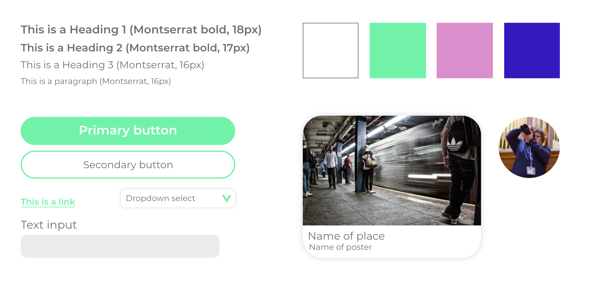

Find your picture spot
-
Role.
Concept development
UX design
UI design
-
Team/individual.
Individual project
-
Project type.
School project
-
Year.
2020
-
Tools.


The perfect spot. How do you find it? Photographers are always looking for really cool or mysterious spots to shoot. In their own city or town they know where to go or how to look. But in a city they do not know this can be very hard or even impossible. How can we help the photographers to find those unique spots in a unknown environment?
With this app photographers can share their secret spots. If every user adds unique spots of their city in the app, others can find them. This way the photographers can help each other out all over the world!
Scroll for more details ↴
Research
Persona
Scenario
Before: Luuk has booked his trip and wants to take pictures during this trip. He knows that there is a webapp that helps you find really nice spots to take pictures. He visits the site and searches for the place he is going to travel to. When he sees a spot where he wants to go to, he saves it. Luuk sees that other have uploaded pictures of that spot during their trip. He really gets inspired of those pictures.
During: Luuk is ready to go to the first spot. He opens the website en searches how to get to the first spot. When he arrives at the first spot he takes some picuteres and chills for a moment. Then he wants to go to the next spot. He grabs his phone and searches how to get to the next spot.
After: Back at home Luuk is so happy with his pictures, he wants to upload them to the web-app. He really liked the photo's of others so he wants to do that for other people aswell. Some of his friends also really like photographing, so he shares the web-app with them.
Design
Wireflow
Style tile
Prototyping
Version 1
Version 2
Version 3